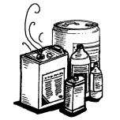

{% extends "templates.jinja/base.page-with-menu.html" %}
{% block title %} Hesperian - Pregnancy &amp; Birth{% endblock %}
{% block id %}Staying_healthy_during_pregnancy{% endblock %}
		{% block content %}
			<h2 class="hm-content-menuheading">Mantenerse sana durante<br> el embarazo</h2>
			
			<ul data-role="listview" data-theme="d" class="hm-menu" data-inset="true">
				<li><a href="Eating_well_during_pregnancy.html" rel="external"><span class="hm-menu-linkwrapper hm-menu-linkwrapper-singleline">Comer bien durante el embarazo</span></a></li>
				<li><a href="Things_to_avoid_during_pregnancy.html" rel="external"><span class="hm-menu-linkwrapper hm-menu-linkwrapper-singleline">Lo que se debe evitar durante el embarazo</span></a></li>
				<li><a href="Common_complaints_during_pregnancy.html" rel="external"><span class="hm-menu-linkwrapper hm-menu-linkwrapper-singleline">Dolencias comunes</span></a></li>
				<li><a href="Things_to_check_during_pregnancy.html" rel="external"><span class="hm-menu-linkwrapper hm-menu-linkwrapper-singleline">Lista de cosas<br> que revisar</span></a></li>
			</ul>
		{% endblock %}
